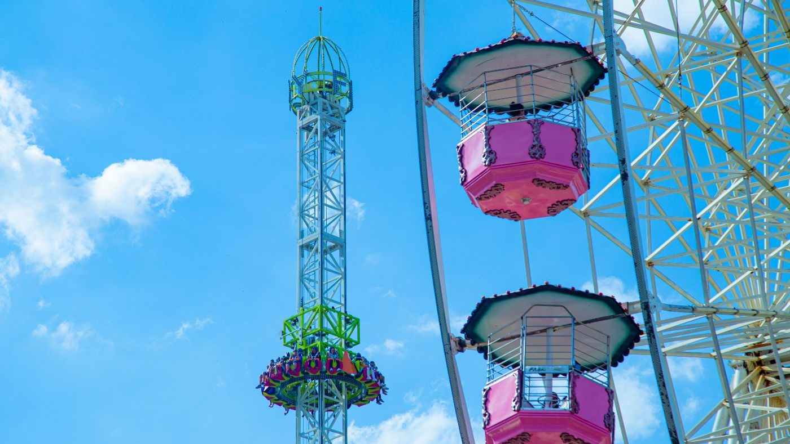
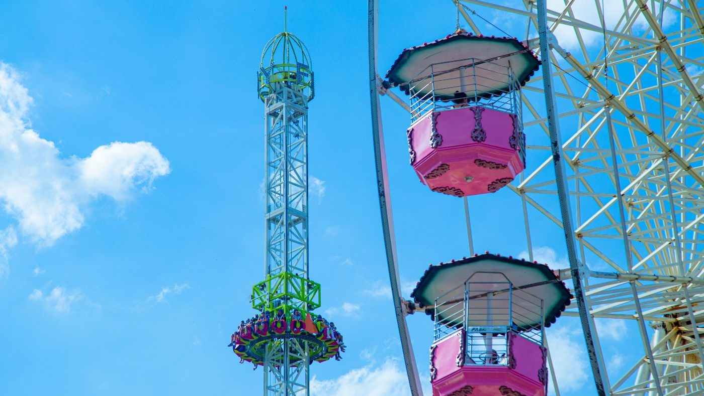

Sobre o Parque Guanabara
A Disney começou com a Disneyland na Califórnia, aberta por Walt Disney em 1955 como um parque temático inovador que combinava entretenimento, fantasia e tecnologia. O sucesso da Disneyland levou à criação de outros parques ao redor do mundo, incluindo o Walt Disney World Resort em Orlando, inaugurado em 1971. Hoje, a Disney é uma marca global de entretenimento que engloba filmes, parques temáticos, produtos de consumo e muito mais, continuando a encantar gerações com suas histórias e personagens icônicos.


 
